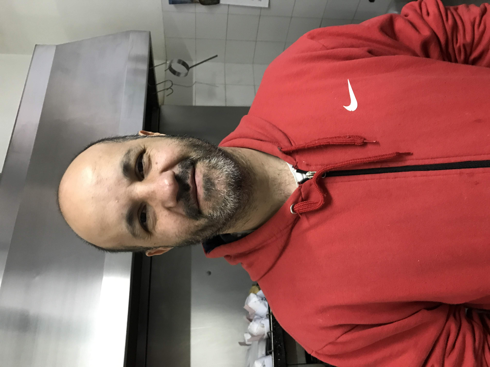
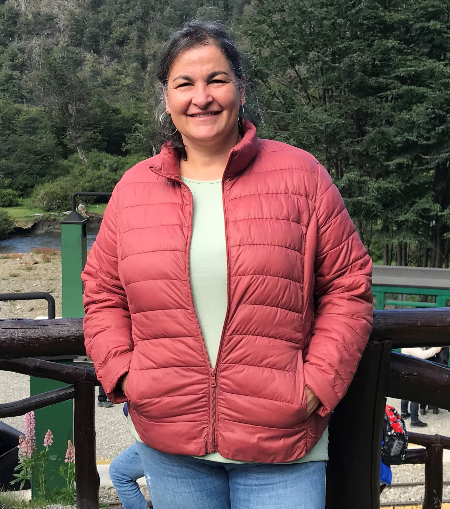
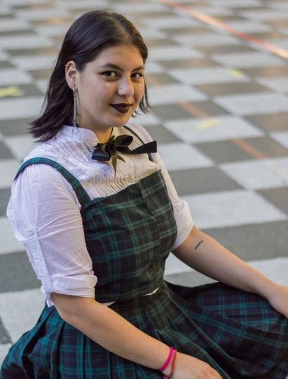

Dónde encontrarnos
Quiénes somos



Gustavo
Verónica
Renata
Gustavo vive en Tres de Febrero, es guitarrista y cocinero. También tiene otro trabajo. Instala y repara aires acondicionados.
Verónica vive en Tres de Febrero, es psicóloga recibida de la USAL (Universidad del Salvador), pero hace unos años descubrió que su verdadera pasión es la cocina. Con mucho esfuerzo logró tener su propio local, Ladovero.
Renata tiene 20 años, vive en Tres de Febrero y estudia teatro en Caseros, además es cantante. Le gusta el k-pop y salir con amigos.